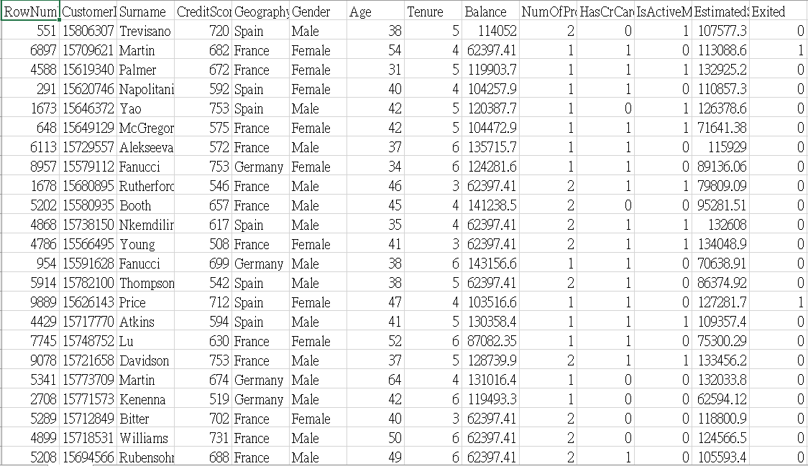
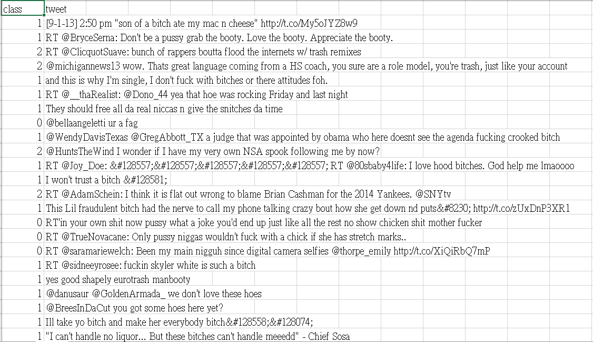
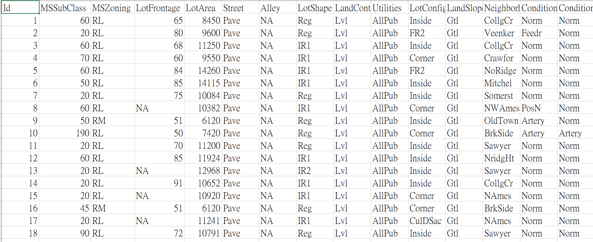

Python Packages: pandas, numpy, sklearn, matplotlib
Introduction: Provided with 8 thousand rows of data composed of 13 features, the objective is to predict whether the customer will leave in the future.
Data Preprocessing: After dropping outliers and unrelated features, such as Surname, RowNumber, and CustomerID, we find that this dataset is imbalanced. The ratio between
0 and 1 in column Exited is 8 to 2. Therefore, while splitting training set and testing set, we use stratification to ensure that characteristic is preserved.
Furthermore, we use oversampling to increase the amount of 1 in column Exited to prevent the model from biasing.
Model: We have tried various models, from linear to non-linear, including Linear Regression, SVC, etc. We decide to use tree-based models at the end. In order
to enhance its performance, we ensemble XGboost, LGBM, and RandomForest. Bescause of this technique, our model is away from overfitting, and we won the first place in
the in-class competition.

Python Packages: pandas, numpy, sklearn, nltk
Introduction: Provided with 14870 rows of data composed of only one feature, the objective is to classify comments into three categories, such as Hateful, Offensive, and Clean.
Data Preprocessing: During the analysis, we find this dataset is also imbalanced. The proportion of Hateful, Offensive, and Clean comments are 77%, 17%, and 6%.
However, we do not use oversampling this time, since it is not easy to generate text data. Therefore, we simply extract text using regex. In order to get clean and useful data, we
delete stop words, including a, the, etc. After that, since we need to transform words into the same tense, we try Lemmatization and Stemming. It turns out that Lemmatization has better performance.
Model: Due to limited time, we stick with what we has used previously, tree-based algorithm, and we do not use ensembling. After comparing the performance, we choose XGB as our algorithm. Despite the fact
that we do not use that technique, we still got the third place in the in-class competition.

Python Packages: pandas, numpy, sklearn
Introduction: Provided with 1460 rows of data composed of nearly 80 feature, the objective is to predict the prices of houses. This is a data set from Kaggle,
click here.
Data Preprocessing:This project may be the most challenging one among these three. To make the data complete, we have done lots of work, since one fourth of the columns contain missing values. We need to decide
what kind of number should be filled in, such as mean, mode, or median, to make our data logical. After that, in order to decrese the time for model training and raise up the accuracy, we try to use some feature
engineering technique. Related methods involve correlation coefficient and tree-based feature selection. However, we decide to use all the features, for the result of 80 features turns out to be the best.
Model: Because of the previous success, we choose to use ensembling again, and the algorithm includes LGBM, XGBoost, and RandomForest. We rank 741st in the contest of 5173 on Kaggle.
Python Packages: pandas, numpy, sklearn
Introduction: This project is a lot different from the other three. We implement machine learning algorithms on the arkanoid game created by
LanKuDot, which includes 5 different levels.
Process:First, we have to write code called the rule for passing every level in the game, and record position of the ball and the board along the process. This is the most demanding part in this project, since the rule needs to
deal with 5 different levels. After we have the data, we use it to make several features, such as speed and direction. With the features, we can finally train the model.
Rule1: In every scene, I use the position of the ball now and of the previous ball to produce a linear equation to predict the intersection between the ball and the board, and move the board there to catch the ball. During the process, I must take
rebounds into consideration so that the board will not move in the wrong direction.
Rule2: This time, I predict the intersection by multiplying the speed by time to count the distance, and add it to the previous position. I still have to take rebouns into consideration.
Model: In this case, I think Knn may be a good choice, since whether to move right or left can be determined by similar data, and the result is satisfactory.